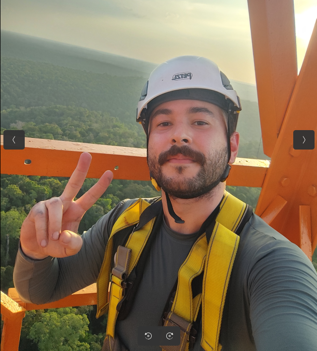

Paulo Laba
Environmental Engineer

About
I am an environmental engineer graduated from UFPR and currently pursuing a master’s degree in Environmental Engineering at UFPR, specializing in micrometeorology under the supervision of Prof. Nelson Luís Dias. My research focuses on atmosphere–forest interactions and turbulence dynamics, with emphasis on the roughness sublayer. In addition, I am an enthusiast in scientific programming, mainly using Chapel and Python, with interests in parallel programming (CPU/GPU), numerical methods, computational fluid dynamics (CFD), machine learning, and coastal engineering.
Education
B.Sc. in Environmental Engineering
Institution: Federal University of Paraná (UFPR)
Graduation year: 2022
Advisor: Prof. Cynara L. N. Cunha
Thesis: Análise dos Processos Erosivos na Praia Central de Matinhos-PR Utilizando o SMC-Brasil
M.Sc. in Environmental Engineering
Institution: Federal University of Paraná (UFPR)
Expected completion: 2025
Advisor: Prof. Nelson Luís Dias
Master's Thesis: O Efeito da Topografia no Balanço da Energia Cinética da Turbulência na Floresta Amazônica
Research & Publications
Journal Publications
Topography-Induced TKE Budget Behavior Over an Amazon Forest
Authors: Laba, P.H.; Dias, N.L.; Chamecki, M.; Dias-Júnior, C.Q.; Torkelson, G.
Year: 2025 · Language: English-US
Journal: Boundary-Layer Meteorology
Uma análise da ECT para a subcamada de rugosidade da Floresta Amazônica sob condições atmosféricas instáveis
Authors: Laba, P. H.; Dias, N.L.; Dias-Júnior, C. Q.
Year: 2024 · Language: Portuguese-BR
Journal: Ciência e Natura
Conference Publications
Evidence of Strong Horizontal Non-homogeneity of Turbulence at the ATTO Site
Authors: Laba, P. H.; Dias, N. L.; Chamecki, M.; Dias Junior, C. Q.; Torkelson G.
Language: English-US
Event: ATTO Workshop, 2025, Manaus-AM
Topography Induces Changes in Turbulence and Transport at the ATTO Site
Authors: Laba, P. H.; Dias, N. L.; Chamecki, M.; Dias Junior, C. Q.
Language: English-US
Event: ATTO Workshop, 2024, Manaus-AM
Evaluation of the Turbulence in the Amazon Roughness Sublayer
Authors: Laba, P. H.; Dias, N. L.; Dias Junior, C. Q.
Language: English-US
Event: XIII Workshop Brasileiro de Micrometeorologia, 2023, Alegrete-RS
Investigação da Circulação Litorânea na Costa Paranaense Utilizando o SMC-Brasil
Authors: Laba, P. H.; Cunha, C. L. N.
Language: Portuguese-BR
Event: XI Simpósio Brasileiro de Engenharia Ambiental e Sanitária, 2022
Avaliação do Clima de Onda para o Litoral do Paraná
Authors: Laba, P. H.; Cunha, C. L. N.
Language: Portuguese-BR
Event: 31º Congresso da ABES, 2021, Curitiba-PR
Estudo da Circulação Hidrodinâmica do Complexo Estuarino Lagunar Mundaú/Manguaba
Authors: Oliveira, D.; Cunha, C. L. N.; Laba, P. H.
Language: Portuguese-BR
Event: XXIII Simpósio Brasileiro de Recursos Hídricos, 2019, Foz do Iguaçu
Ongoing Projects
Effect of Topography and Vegetation on the Roughness Sublayer (RSL)
Investigation of turbulence dynamics in the Amazon forest at the ATTO site. This project focuses on the analysis of multi-height observational data (35, 50, 81 m) to better understand atmosphere–forest interactions and roughness sublayer turbulence. My role includes performing statistical analysis and scientific programming (mainly in Chapel) to process large datasets and explore the governing mechanisms of turbulence.
Tools
Chapel Syntax Highlighting for Sublime Text
A Sublime Text package that provides syntax highlighting for the Chapel programming language, making code more readable and easier to navigate.
LaTeX Changes Cleaner
A Python tool that processes LaTeX documents using the changes package,
automatically generating the final clean version of the file (without markup),
ready for submission to journals.
Contact
Main email: paulo.laba.92@gmail.com · Institutional email: laba@ufpr.br